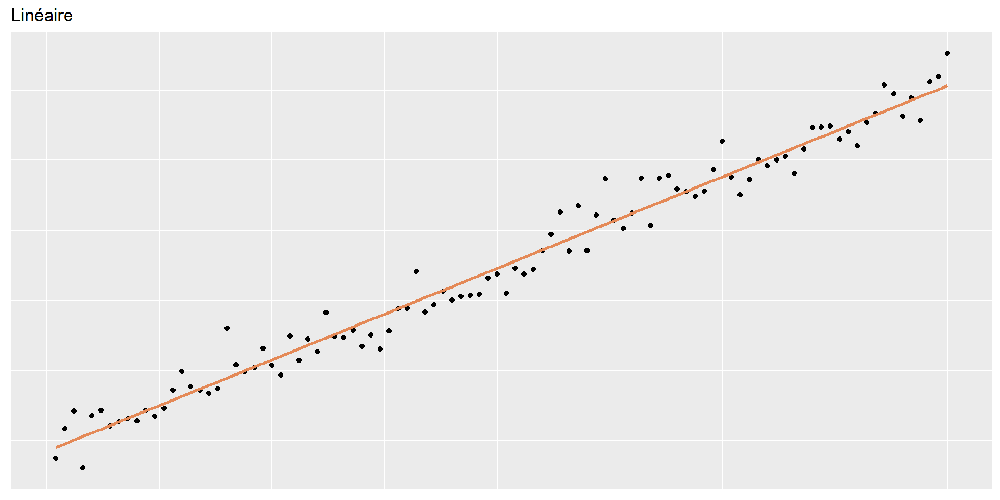
07 - Modélisation - Régression
PRO1036 - Analyse de données scientifiques en R
Tim Bollé
November 10, 2025
L’analyse de données - Kesako?
Les cinqs activités principales
- Formuler et préciser la question
- Explorer les données
- Construire des modèles statistiques
- Interpréter les résultats
- Communiquer les résultats
Formuler et préciser la question
Types de questions/problèmes
- Description: résumer des caractéristiques d’un jeu de données.
- Exploration: découvrir des relations, des patterns entre variables (formuler des hypothèses).
- Inférence: analyser des relations, des patterns entre variables pour en tirer des conclusions générales, en utilisant des données représentatives (échantillon) d’une population générale (tester des hypothèses)
- Prédiction: prédire la valeur d’une variable future/inconnue à partir de données passées/connues (machine learning)
- Causalité: comprendre l’effet d’une variable sur une autre variable (relation de cause à effet).
- Mécanismes: comprendre les processus sous-jacents qui génèrent les données observées.
Explorer les données
Construire des modèles statistiques
Modélisation
Les modèles sont utilisés pour expiquer des relations entre variables et pour faire des prédictions.
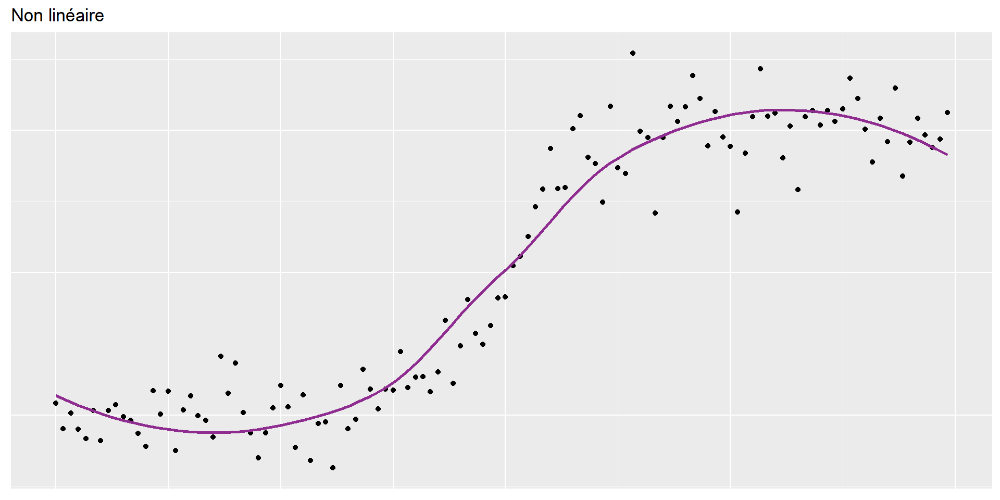
Les données du jour : Paris painting
Données issues des catalogues de 28 ventes aux enchères de tableaux de Paris entre 1764 et 1780.
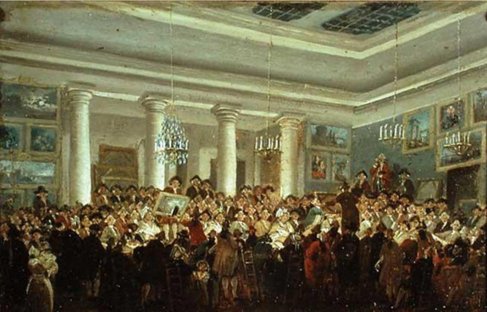
Paris painting
Rows: 3,393
Columns: 61
$ name <chr> "L1764-2", "L1764-3", "L1764-4", "L1764-5a", "L1764-…
$ sale <chr> "L1764", "L1764", "L1764", "L1764", "L1764", "L1764"…
$ lot <chr> "2", "3", "4", "5", "5", "6", "7", "7", "8", "9", "9…
$ position <dbl> 0.03278689, 0.04918033, 0.06557377, 0.08196721, 0.08…
$ dealer <chr> "L", "L", "L", "L", "L", "L", "L", "L", "L", "L", "L…
$ year <dbl> 1764, 1764, 1764, 1764, 1764, 1764, 1764, 1764, 1764…
$ origin_author <chr> "F", "I", "X", "F", "F", "X", "F", "F", "X", "D/FL",…
$ origin_cat <chr> "O", "O", "O", "O", "O", "O", "O", "O", "O", "O", "O…
$ school_pntg <chr> "F", "I", "D/FL", "F", "F", "I", "F", "F", "I", "D/F…
$ diff_origin <dbl> 1, 1, 1, 1, 1, 1, 1, 1, 1, 1, 1, 1, 1, 1, 1, 1, 1, 1…
$ logprice <dbl> 5.8861040, 1.7917595, 2.4849067, 1.7917595, 1.791759…
$ price <dbl> 360.0, 6.0, 12.0, 6.0, 6.0, 9.0, 12.0, 12.0, 24.0, 6…
$ count <dbl> 1, 1, 1, 1, 1, 1, 1, 1, 1, 1, 1, 1, 1, 1, 1, 1, 1, 1…
$ subject <chr> "L'enfant Jesus", "Homme portant un panier", "L'enfa…
$ authorstandard <chr> "Grimou, Alexis", "Fetti, Domenico", "copy after Dyc…
$ artistliving <dbl> 0, 0, 0, 0, 0, 0, 0, 0, 0, 0, 0, 0, 0, 0, 0, 0, 0, 0…
$ authorstyle <chr> NA, NA, "copy after", NA, NA, "copy after", NA, NA, …
$ author <chr> "Grimou", "F\x8ety", "copi\x8e d'apr\x8fs Wandeik", …
$ winningbidder <chr> "Unknown", "Unknown", "Unknown", "Unknown", "Unknown…
$ winningbiddertype <chr> NA, NA, NA, NA, NA, NA, NA, NA, NA, NA, NA, NA, NA, …
$ endbuyer <chr> NA, NA, NA, NA, NA, NA, NA, NA, NA, NA, NA, NA, NA, …
$ Interm <dbl> NA, NA, NA, NA, NA, NA, NA, NA, NA, NA, NA, NA, NA, …
$ type_intermed <chr> NA, NA, NA, NA, NA, NA, NA, NA, NA, NA, NA, NA, NA, …
$ Height_in <dbl> 37, 18, 13, 14, 14, 7, 6, 6, 15, 9, 9, 16, 16, 16, 2…
$ Width_in <dbl> 29.5, 14.0, 16.0, 18.0, 18.0, 10.0, 13.0, 13.0, 15.0…
$ Surface_Rect <dbl> 1091.5, 252.0, 208.0, 252.0, 252.0, 70.0, 78.0, 78.0…
$ Diam_in <dbl> NA, NA, NA, NA, NA, NA, NA, NA, NA, NA, NA, NA, NA, …
$ Surface_Rnd <dbl> NA, NA, NA, NA, NA, NA, NA, NA, NA, NA, NA, NA, NA, …
$ Shape <chr> "squ_rect", "squ_rect", "squ_rect", "squ_rect", "squ…
$ Surface <dbl> 1091.5, 252.0, 208.0, 252.0, 252.0, 70.0, 78.0, 78.0…
$ material <chr> "tableau", "toile", "bois", "toile", "toile", "cuivr…
$ mat <chr> "ta", "t", "b", "t", "t", "c", "t", "t", "c", "b", "…
$ materialCat <chr> NA, "canvas", "wood", "canvas", "canvas", "copper", …
$ quantity <dbl> 1, 1, 1, 1, 1, 1, 1, 1, 1, 1, 1, 1, 1, 1, 1, 1, 1, 1…
$ nfigures <dbl> 0, 0, 0, 0, 0, 0, 0, 0, 0, 0, 0, 0, 0, 0, 0, 0, 0, 0…
$ engraved <dbl> 0, 0, 0, 0, 0, 0, 0, 0, 0, 0, 0, 0, 0, 0, 0, 0, 0, 0…
$ original <dbl> 0, 0, 0, 0, 0, 0, 0, 0, 0, 0, 0, 0, 0, 0, 0, 0, 0, 0…
$ prevcoll <dbl> 0, 0, 0, 0, 0, 0, 0, 0, 0, 0, 0, 0, 0, 0, 0, 0, 0, 0…
$ othartist <dbl> 0, 0, 0, 0, 0, 0, 0, 0, 0, 0, 0, 0, 0, 0, 0, 0, 0, 0…
$ paired <dbl> 0, 0, 0, 1, 1, 0, 1, 1, 0, 1, 1, 1, 1, 1, 0, 1, 1, 1…
$ figures <dbl> 0, 0, 0, 0, 0, 0, 0, 0, 0, 0, 0, 0, 0, 0, 0, 0, 0, 0…
$ finished <dbl> 0, 0, 0, 0, 0, 0, 0, 0, 0, 0, 0, 0, 0, 0, 0, 0, 0, 0…
$ lrgfont <dbl> 0, 0, 0, 0, 0, 0, 0, 0, 0, 0, 0, 0, 0, 0, 0, 0, 0, 0…
$ relig <dbl> 1, 0, 1, 0, 0, 1, 0, 0, 0, 0, 0, 0, 0, 0, 0, 0, 0, 0…
$ landsALL <dbl> 0, 0, 1, 1, 1, 0, 0, 0, 0, 0, 0, 1, 1, 1, 0, 1, 1, 1…
$ lands_sc <dbl> 0, 0, 0, 0, 0, 0, 0, 0, 0, 0, 0, 1, 1, 1, 0, 0, 0, 0…
$ lands_elem <dbl> 0, 0, 1, 1, 1, 0, 0, 0, 0, 0, 0, 0, 0, 0, 0, 1, 1, 1…
$ lands_figs <dbl> 0, 0, 0, 1, 1, 0, 0, 0, 0, 0, 0, 0, 0, 0, 0, 1, 1, 1…
$ lands_ment <dbl> 0, 0, 1, 0, 0, 0, 0, 0, 0, 0, 0, 0, 0, 0, 0, 0, 0, 0…
$ arch <dbl> 0, 0, 0, 0, 0, 0, 0, 0, 0, 0, 0, 0, 0, 0, 0, 0, 0, 0…
$ mytho <dbl> 0, 0, 0, 0, 0, 0, 1, 1, 1, 0, 0, 0, 0, 0, 0, 0, 0, 0…
$ peasant <dbl> 0, 0, 0, 0, 0, 0, 0, 0, 0, 0, 0, 0, 0, 0, 0, 0, 0, 0…
$ othgenre <dbl> 0, 1, 0, 0, 0, 0, 0, 0, 0, 0, 0, 0, 0, 0, 0, 0, 0, 0…
$ singlefig <dbl> 0, 0, 0, 0, 0, 0, 0, 0, 0, 1, 1, 1, 1, 1, 1, 0, 0, 0…
$ portrait <dbl> 0, 0, 0, 0, 0, 0, 0, 0, 0, 0, 0, 0, 0, 0, 1, 0, 0, 0…
$ still_life <dbl> 0, 0, 0, 0, 0, 0, 0, 0, 0, 0, 0, 0, 0, 0, 0, 0, 0, 0…
$ discauth <dbl> 0, 0, 0, 0, 0, 0, 0, 0, 0, 0, 0, 0, 0, 0, 0, 0, 0, 0…
$ history <dbl> 0, 0, 0, 0, 0, 0, 0, 0, 0, 0, 0, 0, 0, 0, 0, 0, 0, 0…
$ allegory <dbl> 0, 0, 0, 0, 0, 0, 0, 0, 0, 0, 0, 0, 0, 0, 0, 0, 0, 0…
$ pastorale <dbl> 0, 0, 0, 0, 0, 0, 0, 0, 0, 0, 0, 0, 0, 0, 0, 0, 0, 0…
$ other <dbl> 0, 0, 0, 0, 0, 0, 0, 0, 0, 0, 0, 0, 0, 0, 0, 0, 0, 0…Relation Largeur/Hauteur
Hauteur vs Largeur
Hauteur et largeur
… Personnalisé
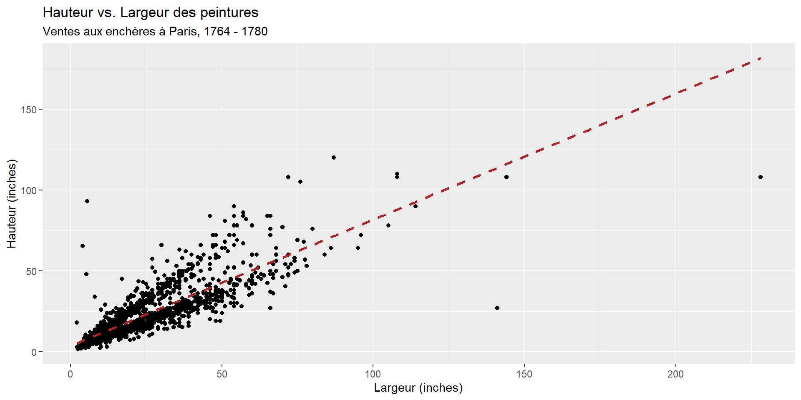
ggplot(data = pp, aes(x = Width_in, y = Height_in)) +
geom_point() +
geom_smooth(method = "lm", se=FALSE, linetype = "dashed", color="#b22222") +
labs(
title = "Hauteur vs. Largeur des peintures",
subtitle = "Ventes aux enchères à Paris, 1764 - 1780",
x = "Largeur (inches)",
y = "Hauteur (inches)"
)Vocabulaire
Modélisation
Variable dépendante (expliquée): Variable dont on cherche à comprendre le comportement ou la variation, sur l’axe des y
Variables indépendantes (explicatives): Autres variables que l’on utilise pour expliquer la variation de la variable dépendante, sur l’axe des x
Valeur prédite: Résultat de la fonction modèle
- La fonction modèle donne la valeur typique (attendue) de la variable dépendante
Résidus: Mesure de la distance entre chaque observation et sa valeur prédite (basée sur un modèle particulier)
- Résidu = Valeur observée - Valeur prédite
- Indique à quel point chaque observation est au-dessus/en-dessous de la valeur attendue
Variables explicatives multiples
Pensez vous que la hauteur d’une peinture peut être expliquée uniquement par sa largeur ?
Portraits vs Paysages

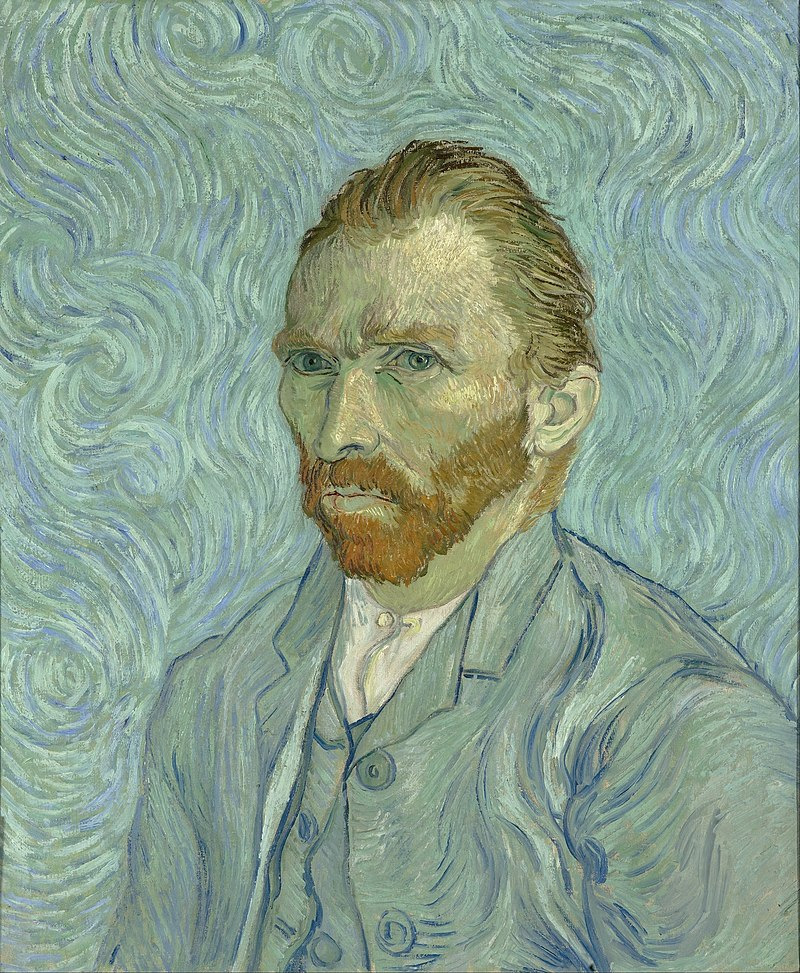
Variables explicatives multiples
Est-ce que la relation entre hauteur et largeur dépend de la présence d’éléments paysages ?
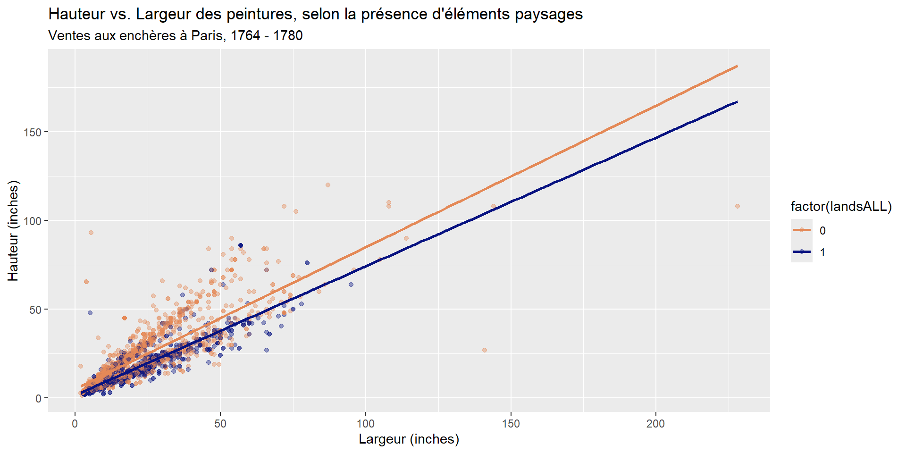
ggplot(data = pp, aes(x = Width_in, y = Height_in, color = factor(landsALL))) +
geom_point(alpha = 0.4) +
geom_smooth(method = "lm", se = FALSE,
fullrange = TRUE) + #<<
labs(
title = "Hauteur vs. Largeur des peintures, selon la présence d'éléments paysages",
subtitle = "Ventes aux enchères à Paris, 1764 - 1780",
x = "Largeur (inches)",
y = "Hauteur (inches)"
) +
scale_color_manual(values = c("#E48957", "#071381"))Fitter et interpréter un modèle de régression
Objectif: Prédire la hauteur d’une peinture en fonction de sa largeur
\[\widehat{hauteur}_{i} = \beta_0 + \beta_1 \times largeur_{i}\]
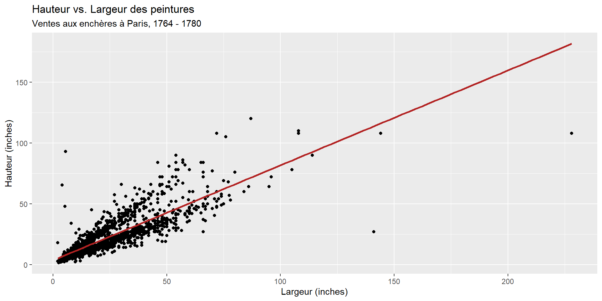
Comment ?

Étape 1: Spécifier le modèle
Étape 2: Choisir le engine
Étape 3: Fitter le modèle
Ici il faut indique la formule et les données
Résultat du modèle
parsnip model object
Call:
stats::lm(formula = Height_in ~ Width_in, data = data)
Coefficients:
(Intercept) Width_in
3.6214 0.7808 \[\widehat{height}_{i} = 3.62 + 0.781 \times width_{i}\]
Affichage Tidy
# A tibble: 2 × 5
term estimate std.error statistic p.value
<chr> <dbl> <dbl> <dbl> <dbl>
1 (Intercept) 3.62 0.254 14.3 8.82e-45
2 Width_in 0.781 0.00950 82.1 0 \[\widehat{height}_{i} = 3.62 + 0.781 \times width_{i}\]
Interprétation des coefficients
\[\widehat{height}_{i} = 3.62 + 0.781 \times width_{i}\]
Ordonnée à l’origine (\(\beta_0 = 3.62\)): Hauteur prédite lorsque la largeur est de 0 pouces.
Pente (\(\beta_1 = 0.781\)): Pour chaque augmentation de 1 pouce de la largeur, la hauteur prédite augmente en moyenne de 0.781 pouces.
Attention aux extrapolations !
Correlation n’est pas causalité !
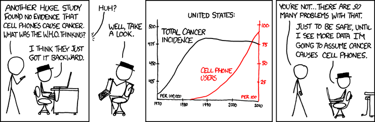
Valeurs prédites et résidus
We’re interested in \(\beta_0\) (population parameter for the intercept) and \(\beta_1\) (population parameter for the slope) in the following model: Nous voudrions connaître les paramètres de population \(\beta_0\) (ordonnée à l’origine) et \(\beta_1\) (pente) dans le modèle suivant :
\[Y_{i} = \beta_0 + \beta_1~x_{i}\]
Mais nous n’avons qu’un échantillon de données…
Nous pouvons estimer ces paramètres à partir de notre échantillon, en utilisant les estimateurs \(b_0\) et \(b_1\) :
\[\hat{y}_{i} = b_0 + b_1~x_{i}\]
Estimation des paramètres
Les paramètres sont estimés en minimisant la somme des carrés des résidus :
\[\text{SSE} = \sum_{i=1}^{n} (y_{i} - \hat{y}_{i})^2\]
Visuellement…
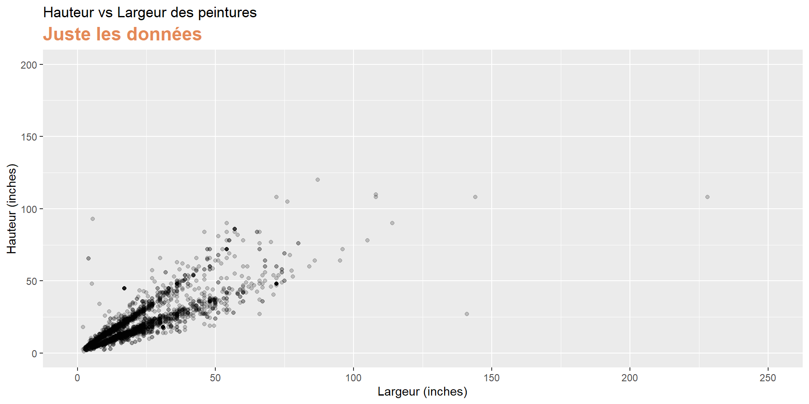
Visuellement…
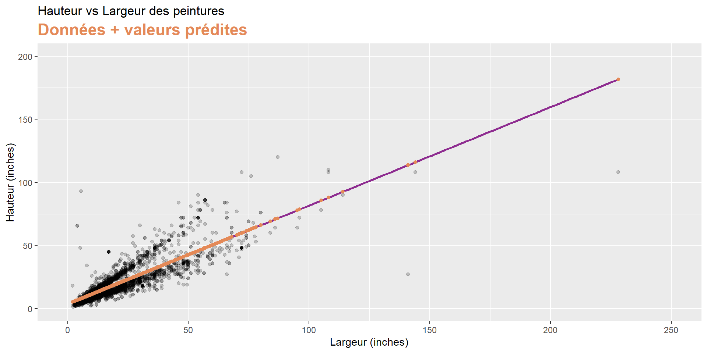
Visuellement…
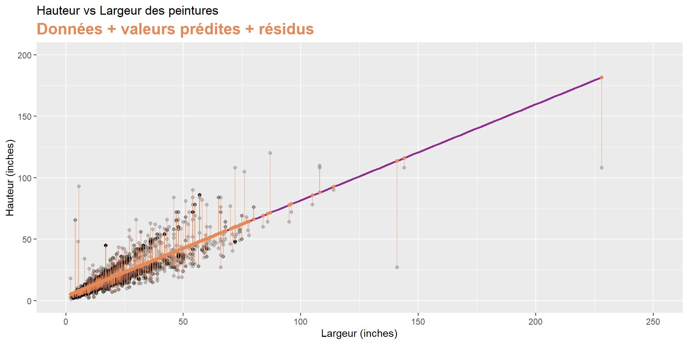
Valeurs explicatives catégorielles
Variable indépendante catégorielle avec 2 niveaux
# A tibble: 3,393 × 3
name Height_in landsALL
<chr> <dbl> <dbl>
1 L1764-2 37 0
2 L1764-3 18 0
3 L1764-4 13 1
4 L1764-5a 14 1
5 L1764-5b 14 1
6 L1764-6 7 0
7 L1764-7a 6 0
8 L1764-7b 6 0
9 L1764-8 15 0
10 L1764-9a 9 0
11 L1764-9b 9 0
12 L1764-10a 16 1
13 L1764-10b 16 1
14 L1764-10c 16 1
15 L1764-11 20 0
16 L1764-12a 14 1
17 L1764-12b 14 1
18 L1764-13a 15 1
19 L1764-13b 15 1
20 L1764-14 37 0
# ℹ 3,373 more rowslandsALL = 0: Pas d’éléments de paysageslandsALL = 1: Éléments de paysages présents
Hauteur et éléments de paysages
# A tibble: 2 × 5
term estimate std.error statistic p.value
<chr> <dbl> <dbl> <dbl> <dbl>
1 (Intercept) 22.7 0.328 69.1 0
2 factor(landsALL)1 -5.65 0.532 -10.6 7.97e-26\[\widehat{Height_{in}} = 22.7 - 5.645~landsALL\]
Ordonnée à l’origine (\(\beta_0 = 22.7\)): Hauteur prédite pour les peintures sans éléments de paysages (
landsALL = 0).Coefficient (\(\beta_1 = -5.645\)): Différence moyenne de hauteur entre les peintures avec éléments de paysages et celles sans. Les peintures avec éléments de paysages sont en moyenne 5.645 pouces plus courtes que celles sans.
Hauteur et école de peinture
# A tibble: 7 × 5
term estimate std.error statistic p.value
<chr> <dbl> <dbl> <dbl> <dbl>
1 (Intercept) 14.0 10.0 1.40 0.162
2 school_pntgD/FL 2.33 10.0 0.232 0.816
3 school_pntgF 10.2 10.0 1.02 0.309
4 school_pntgG 1.65 11.9 0.139 0.889
5 school_pntgI 10.3 10.0 1.02 0.306
6 school_pntgS 30.4 11.4 2.68 0.00744
7 school_pntgX 2.87 10.3 0.279 0.780 Dummy variable
# A tibble: 7 × 5
term estimate std.error statistic p.value
<chr> <dbl> <dbl> <dbl> <dbl>
1 (Intercept) 14.0 10.0 1.40 0.162
2 school_pntgD/FL 2.33 10.0 0.232 0.816
3 school_pntgF 10.2 10.0 1.02 0.309
4 school_pntgG 1.65 11.9 0.139 0.889
5 school_pntgI 10.3 10.0 1.02 0.306
6 school_pntgS 30.4 11.4 2.68 0.00744
7 school_pntgX 2.87 10.3 0.279 0.780 - Quand une variable catégorielle a plus de deux niveaux, on crée des variables indicatrices (dummy variables) pour chaque niveau, sauf un (le niveau de référence).
- Chaque coefficient représente la différence moyenne entre ce niveau et le niveau de référence.
Dummy variable
| school_pntg | D_FL | F | G | I | S | X |
|---|---|---|---|---|---|---|
| A | 0 | 0 | 0 | 0 | 0 | 0 |
| D/FL | 1 | 0 | 0 | 0 | 0 | 0 |
| F | 0 | 1 | 0 | 0 | 0 | 0 |
| G | 0 | 0 | 1 | 0 | 0 | 0 |
| I | 0 | 0 | 0 | 1 | 0 | 0 |
| S | 0 | 0 | 0 | 0 | 1 | 0 |
| X | 0 | 0 | 0 | 0 | 0 | 1 |
# A tibble: 3,393 × 3
name Height_in school_pntg
<chr> <dbl> <chr>
1 L1764-2 37 F
2 L1764-3 18 I
3 L1764-4 13 D/FL
4 L1764-5a 14 F
5 L1764-5b 14 F
6 L1764-6 7 I
7 L1764-7a 6 F
8 L1764-7b 6 F
9 L1764-8 15 I
10 L1764-9a 9 D/FL
11 L1764-9b 9 D/FL
12 L1764-10a 16 X
13 L1764-10b 16 X
14 L1764-10c 16 X
15 L1764-11 20 D/FL
16 L1764-12a 14 D/FL
17 L1764-12b 14 D/FL
18 L1764-13a 15 D/FL
19 L1764-13b 15 D/FL
20 L1764-14 37 F
# ℹ 3,373 more rowsInterprétation
# A tibble: 7 × 5
term estimate std.error statistic p.value
<chr> <dbl> <dbl> <dbl> <dbl>
1 (Intercept) 14.0 10.0 1.40 0.162
2 school_pntgD/FL 2.33 10.0 0.232 0.816
3 school_pntgF 10.2 10.0 1.02 0.309
4 school_pntgG 1.65 11.9 0.139 0.889
5 school_pntgI 10.3 10.0 1.02 0.306
6 school_pntgS 30.4 11.4 2.68 0.00744
7 school_pntgX 2.87 10.3 0.279 0.780 - École autichienne (A) est le niveau de référence. En moyenne, les peintures de cette école mesurent 14 pouces de haut.
- École néerlandaise/flamande (D/FL) : En moyenne, les peintures de cette école sont 2.33 pouces plus hautes que celles de l’école autrichienne.
- École française (F) : En moyenne, les peintures de cette école sont 10.2 pouces plus hautes que celles de l’école autrichienne.
- École allemande (G) : En moyenne, les peintures de cette école sont 1.65 pouces plus hautes que celles de l’école autrichienne.
- École italienne (I) : En moyenne, les peintures de cette école sont 10.3 pouces plus hautes que celles de l’école autrichienne.
- École espagnole (S) : En moyenne, les peintures de cette école sont 30.4 pouces plus hautes que celles de l’école autrichienne.
- École inconnue (X) : En moyenne, les peintures de cette catégorie sont 2.87 pouces plus hautes que celles de l’école autrichienne.
\(R^{2}\) et \(R^{2}\) ajusté
Mesurer la qualité d’ajustement
- Coefficient de détermination (\(R^{2}\)): Proportion de la variance totale de la variable dépendante expliquée par le modèle.
- Varie entre 0 et 1
- Plus \(R^{2}\) est proche de 1, meilleur est l’ajustement du modèle aux données.
# A tibble: 1 × 12
r.squared adj.r.squared sigma statistic p.value df logLik AIC BIC
<dbl> <dbl> <dbl> <dbl> <dbl> <dbl> <dbl> <dbl> <dbl>
1 0.683 0.683 8.30 6749. 0 1 -11083. 22173. 22191.
# ℹ 3 more variables: deviance <dbl>, df.residual <int>, nobs <int>\(R^{2}\) ajusté
- Coefficient de détermination ajusté (\(R^{2}_{adj}\)): Version ajustée de \(R^{2}\) qui prend en compte le nombre de variables explicatives dans le modèle.
- Utile pour comparer des modèles avec différents nombres de variables explicatives.
linear_reg() %>%
set_engine("lm") %>%
fit(Height_in ~ Width_in + landsALL + school_pntg, data = pp) %>%
glance()# A tibble: 1 × 12
r.squared adj.r.squared sigma statistic p.value df logLik AIC BIC
<dbl> <dbl> <dbl> <dbl> <dbl> <dbl> <dbl> <dbl> <dbl>
1 0.716 0.715 7.87 986. 0 8 -10910. 21840. 21901.
# ℹ 3 more variables: deviance <dbl>, df.residual <int>, nobs <int>Références
Peng, R. and Matsui, E. (2016). The Art of Data Science. Lulu.com.

PRO1036 - 04 | Tim Bollé